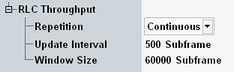

The "RLC Throughput" parameters configure the scope of the measurement.

Defines how often the measurement is repeated.
"Continuous" | The measurement is continued until it is explicitly terminated. The results are periodically updated. |
"Single-Shot" | The measurement stops automatically when the configured "Window Size" has been processed. |
Number of subframes used to derive a single throughput result (multiple of 100 subframes).
Remote command:Number of subframes on the X-axis of the throughput diagram.
The number of results in the diagram equals the window size divided by the update interval rounded down to the next integer value, plus one:
Number of results = integer (<Window Size> / <Update Interval>) + 1
The window size cannot be smaller than the update interval.
Remote command: